RollerLoop
Une caméra de course qui donne la sensation de vitesse sans jamais cacher la route.
A racing camera that sells the speed without ever hiding the road.
- ContexteContext
- Projet ISART d'un an, 2024 – 2025One-year ISART project, 2024 – 2025
- ÉquipeTeam
- 20 personnes, dont 5 programmeurs20 people, including 5 programmers
- PlateformesPlatforms
- PS5 · PC
- Mon rôleMy role
- La caméra, en binôme avec un game designer, et le support PS5 du moteurThe camera, paired with a game designer, and PS5 engine support
Aller vite, et voir où l'on vaGo fast, and see where you're going
Dans RollerLoop, on enchaîne virages, drifts, grinds, sauts et chutes à plus de 250 km/h. Le joueur ne contrôle pas la caméra : un « drone » le suit automatiquement.
In RollerLoop, you chain turns, drifts, grinds, jumps and drops at over 250 km/h. The player doesn't control the camera: a "drone" follows them automatically.
Elle devait donc montrer la route à l'avance tout en amplifiant la sensation de vitesse, deux objectifs qui tirent souvent en sens inverse. La réponse : maîtriser chaque axe de rotation et de déplacement, séparément.
So it had to show the road ahead while amplifying the sense of speed, two goals that often pull in opposite directions. The answer: control every rotation and movement axis, one by one.
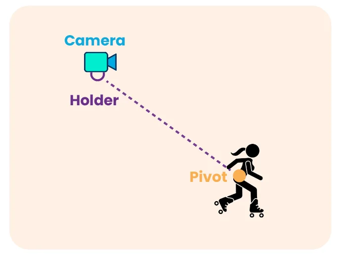
Un comportement par axe, et plus encoreOne behaviour per axis, and more
-
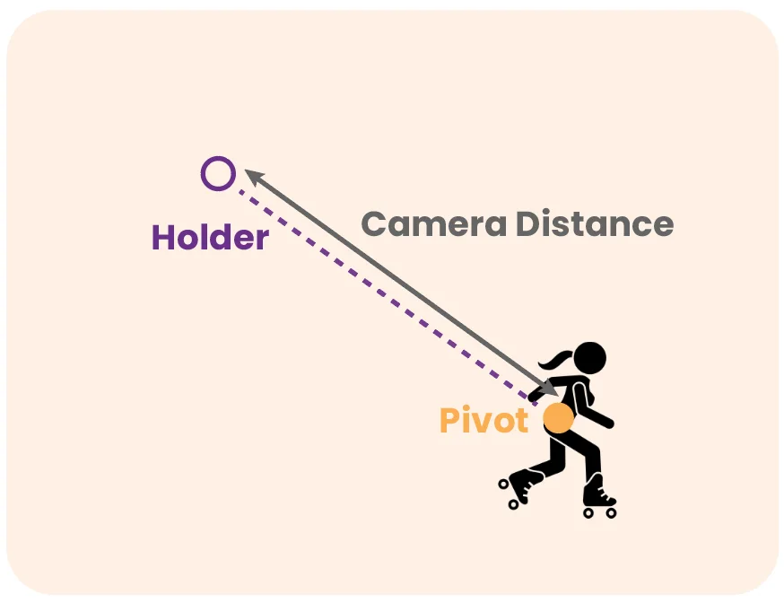
Distance et FOV selon la vitesseDistance and FOV from speed
Plus on va vite, plus la caméra recule et le champ de vision s'élargit : on voit plus loin et la vitesse se ressent. Des variantes prennent le relais en drift et en grind.
The faster you go, the further back the camera sits and the wider the field of view: you see further and feel the speed. Variants take over while drifting and grinding.
-
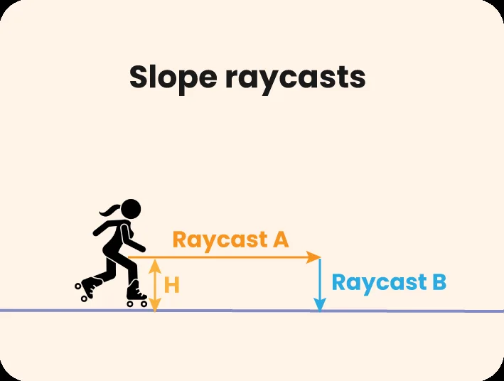
Anticiper la penteAnticipating slopes
La première version suivait le sol sous les pieds et réagissait trop tard. Deux raycasts, plus longs avec la vitesse, lisent maintenant la route devant le joueur et distinguent un mur d'une montée.
The first version followed the ground underfoot and reacted too late. Two raycasts, longer at higher speed, now read the road ahead and tell a wall from a ramp.
-
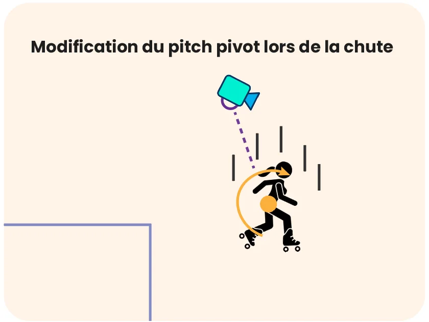
Suivre les chutesFollowing drops
En l'air, l'inclinaison dépend de la vitesse de chute, pour voir où l'on va atterrir. Les transitions sol / air ont leurs propres vitesses de lissage.
In the air, the tilt depends on how fast you're falling, so you can see where you'll land. Ground-to-air transitions have their own smoothing speeds.
-
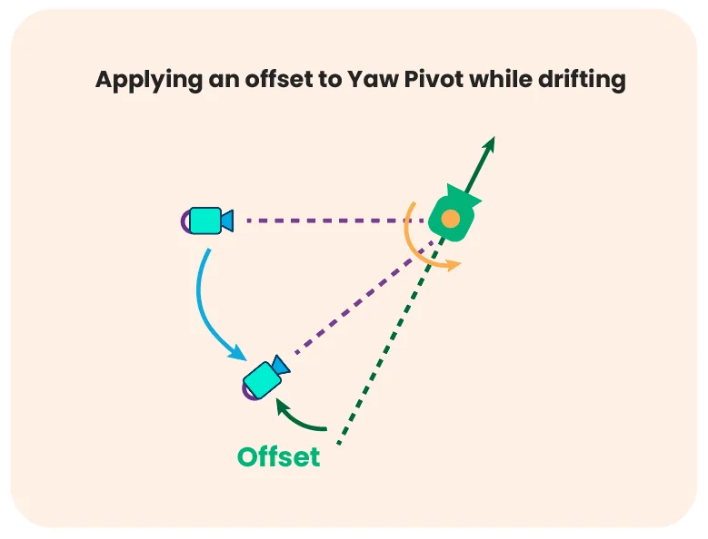
Ouvrir les virages en driftOpening up drift turns
En drift, la caméra pivote vers l'extérieur selon l'intensité du virage et la vitesse, puis le holder compense pour garder la sortie du virage à l'écran.
While drifting, the camera swings out based on turn intensity and speed, then the holder compensates to keep the corner exit on screen.
-
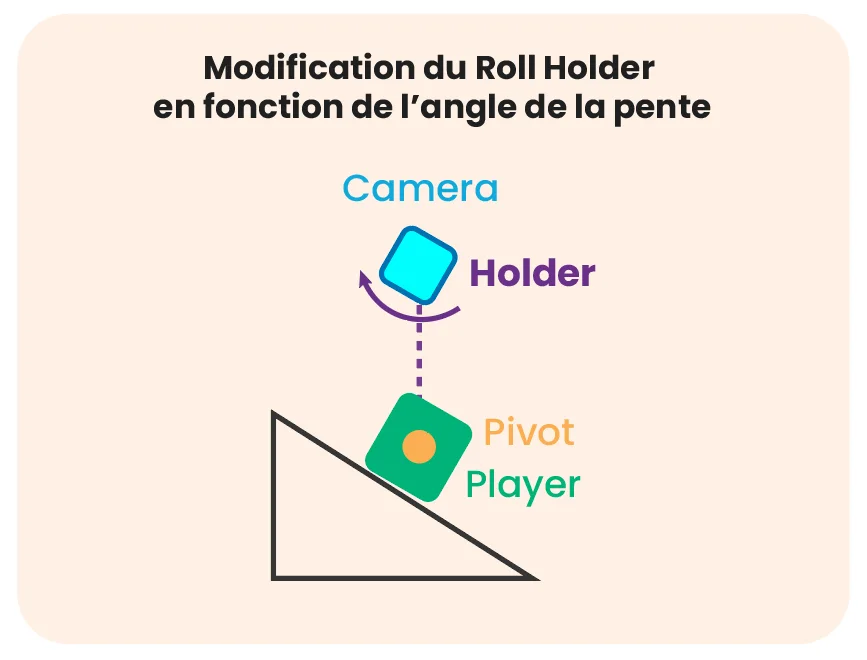
L'effet droneThe drone feel
La caméra s'incline dans les virages et sur les pentes de côté, comme un drone qui suit le joueur. Un seuil évite qu'elle revienne trop lentement après un grind.
The camera banks into turns and side slopes, like a drone following the player. A threshold stops it from settling back too slowly after a grind.
-
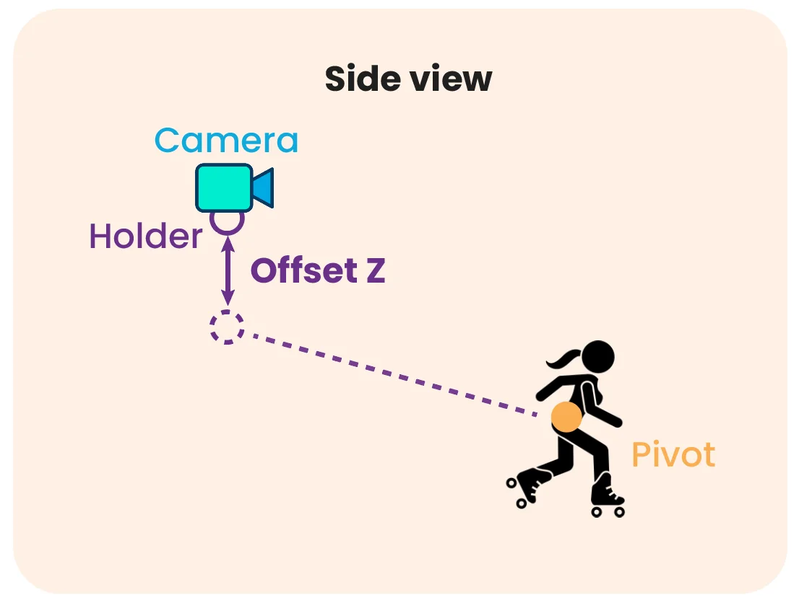
Raser le sol en driftHugging the ground in drifts
Pendant un drift, la caméra descend et se décale sur le côté : le sol défile plus vite à l'écran, et le joueur reste bien visible.
During a drift, the camera drops and slides sideways: the ground rushes past faster on screen, and the player stays clearly visible.
-
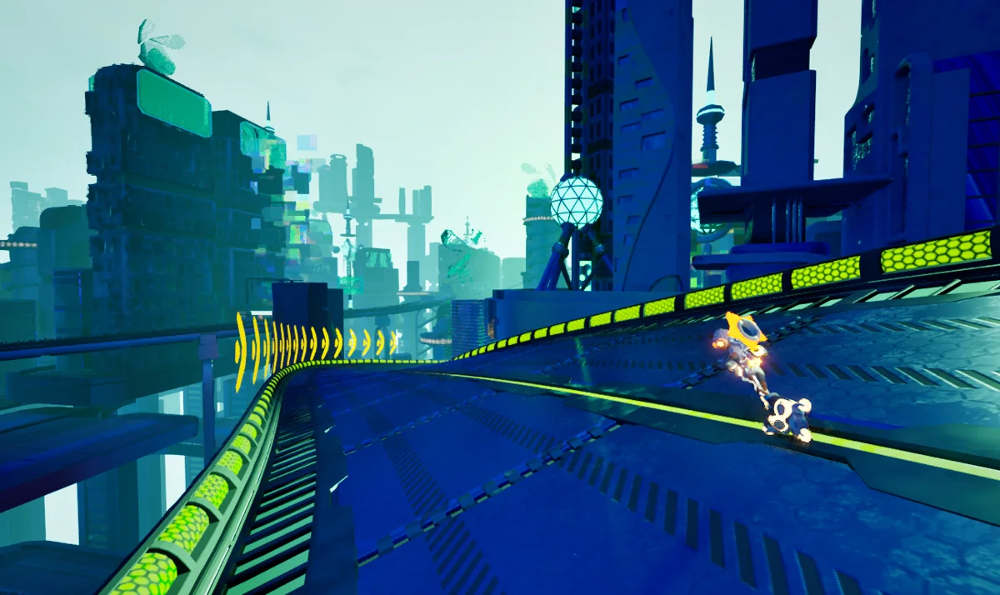
Des secousses sur mesureCustom camera shakes
Les secousses d'Unreal ne se modifiaient pas en cours de jeu. J'ai écrit les miennes, en bruit de Perlin : un tremblement permanent qui grandit avec la vitesse, et des secousses ponctuelles au choc contre un mur, à l'atterrissage et aux boosts.
Unreal's shakes couldn't be changed at runtime. I wrote my own, based on Perlin noise: a constant tremor that grows with speed, plus one-off shakes on wall hits, landings and boosts.
-
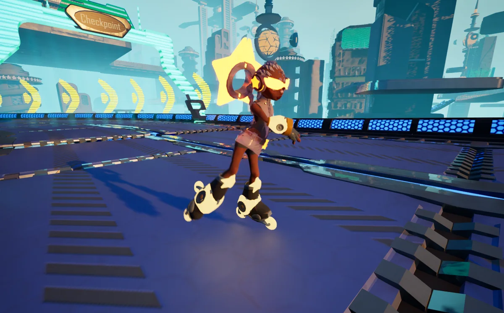
Des caméras de cinématiqueCinematic cameras
Pour les moments contemplatifs, des caméras dédiées prennent le relais : un tour autour du joueur, une vue de côté, puis un fondu vers la caméra de course. C'est le cas de la transition vers le premier niveau, en bas de page.
For contemplative moments, dedicated cameras take over: an orbit around the player, a side view, then a blend back to the racing camera. The transition into the first level, at the bottom of this page, uses them.
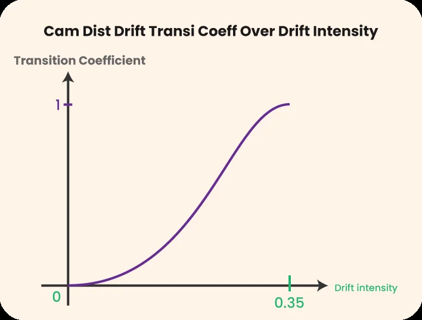
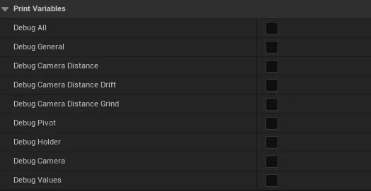
Du C++, réglé sans toucher au codeC++, tuned without touching code
Toute la logique est en C++. Chaque comportement s'appuie sur des courbes (selon la vitesse, la pente, l'intensité du drift…) regroupées dans un Data Asset.
All the logic is in C++. Each behaviour relies on curves (over speed, slope, drift intensity…) grouped in a Data Asset.
On peut ainsi créer plusieurs profils de caméra et ajuster le ressenti en direct. J'ai travaillé en binôme avec un game designer : je codais les comportements, il les réglait, et cette complémentarité nous a évité beaucoup d'allers-retours.
This makes it easy to create several camera profiles and tune the feel live. I worked in a pair with a game designer: I coded the behaviours, he tuned them, and that complementarity saved us a lot of back-and-forth.
Pour déboguer, j'ai ajouté un système de logs piloté lui aussi par un Data Asset : un booléen par feature de la caméra affiche à l'écran ses statistiques et ses paramètres, sans recompiler.
For debugging, I added a logging system, also driven by a Data Asset: one boolean per camera feature prints its stats and parameters on screen, with no recompile.
Un moteur recompilé, puis allégé pour l'équipeA rebuilt engine, then slimmed down for the team
Pour viser la PS5, j'ai recompilé Unreal Engine 5.4 depuis ses sources en y intégrant le SDK PlayStation 5. La compilation s'est bien passée ; le vrai problème est venu après.
To target PS5, I rebuilt Unreal Engine 5.4 from source with the PlayStation 5 SDK. The build itself went fine; the real problem came afterwards.
L'éditeur obtenu pesait une centaine de Go, trop lourd pour les machines de l'équipe artistique. Nous avons repéré les fichiers de débogage (.pdb), utiles aux seuls programmeurs, et préparé une installation sur mesure qui les retire.
The resulting editor weighed around a hundred GB, too much for the art team's machines. We identified the debug files (.pdb), only useful to programmers, and set up a custom install without them.
Environ 70 % d'espace en moins pour l'équipe artistique.
About 70% less disk space for the art team.
Du tutoriel au premier niveauFrom tutorial to the first level
La transition entre le tutoriel et le premier niveau, filmée par une de mes caméras de cinématique : la piste se construit devant le joueur, entre deux baleines volantes.
The transition from the tutorial to the first level, filmed by one of my cinematic cameras: the track builds itself in front of the player, between two flying whales.
Jouer sur itch.io ↗Play on itch.io ↗ Projet suivant : AI Drone Flight →Next project: AI Drone Flight →